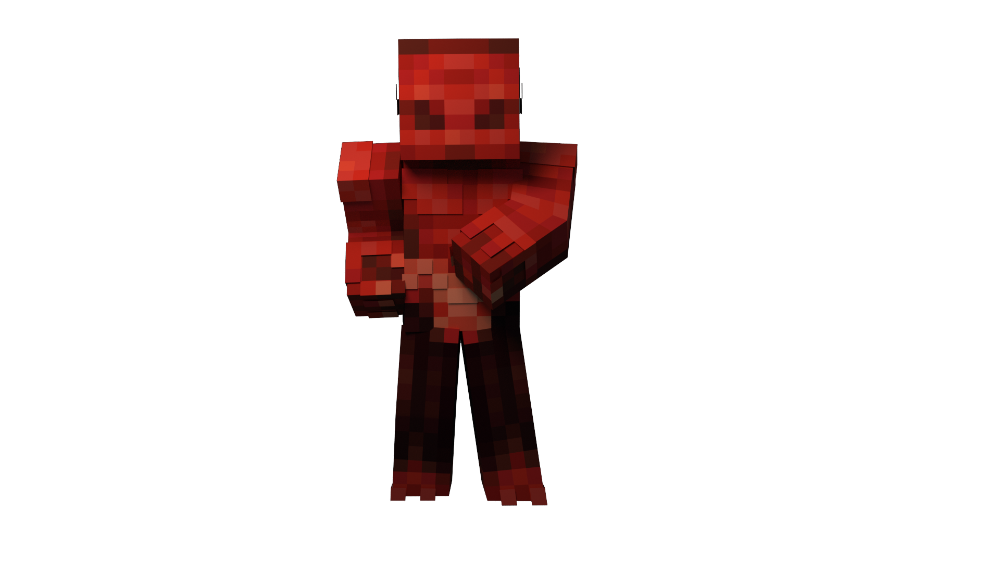

Загальна експозиція
За всю історію свого Омен пройшов безліч етапів: його рельєф змінювався, з’являлись нові мешканці, старі ж розчинялись в часі, лишаючи по собі тільки дрібний набір артефактів у шафі якогось вельможі.
Епохи Омену
Ера етеріуму
Насправді мало що відомо про цю епоху, хоча деякі не дуже чисті на руку чарівники люблять розповідати про неї придворним дітям. За легендами, саме в цю епоху неживий світ Омену був відвіданий високодуховними магічними створіннями, що породили титанів, елементалів і різноманітних духів, котрі певний час населятимуть Омен, перетворюючи його мертві скелі на дихаючий життям оазис.
Епоха плавлення
Неназвані магічні істоти, котрі населили Омен численними духами, прийнялись експериментувати з чимось більш приземленим, з матеріальними істотами.
Вони створювали цілі екосистеми, котрі боролись між собою, еволюціонували і гинули. Цей процес був надзвичайно довгим, настільки що звичайна людина навряд чи зможе осягнути, а ельдарі зможе тільки позаздрити.
З незрозумілих причин астральні істоти покинули свої дослідження на півдорозі, зникнувши без сліду. Разом з їх зникненням всі породжені ними магічні істоти значно ослабли, хоча все ще залишалися надзвичайно могутніми.
Приблизно під кінець цієї епохи Омен вперше відвідали ельдарі.
Епоха Розкладу
Це загальна назва епохи, котра почалась після першого Катаклізму, котрий знищив 60% наземного життя, 80% водного і відрізав кілька родин ельдарі, котрім не поталанило мандрувати Оменом в цей час, від їх світу. Ельдарі впали в невимовний відчай і, після наради родин, вирушили в подорож землями Омену в пошуках нового дому чи можливості повернутись в старий. Приблизно цим періодом датуються перші писемні згадки про населення Омену. Заснування Ад’ерну, першого великого міста ельдарі після століть поневірянь, є точкою, від якої вони рахують час.
- 15 р.в.з.а - Заснування Консіліуму Ельдарі
- 67 р.в.з.а - Перша спроба відкриття Астральних Воріт, закінчилась загибеллю багатьох ельдарі. Дві родини ельдарі припинили існування.
- 139 р.в.з.а - Перший контакт ельдарі О’отан
- 253 р.в.з.а - Перший контакт ельдарі з расою Даврі
- 254 р.в.з.а - Перша війна ельдарі з расою даврі, закінчилась встановленням кордонів на користь ельдарі
- 367 р.в.з.а - Друга спроба відкриття Астральних Воріт, закінчилась вивільненням війська Ніхілант, частковою руйнацією Ад’ерну і повним винищенням інших менших міст.
- 372 р.в.з.а - Закінчення ліквідації наслідків вторгнення Ніхілант спільними зусиллями ельдарі, даврі, о’отан і ундмерів
- 550 р.в.з.а - Перший контакт ельдарі з людськими племенами
- 631 р.в.з.а - Заснування Тавілону, першого великого міста людей
- 665 р.в.з.а - Викриття підземного міста скавенів під Тавілонем. Внаслідок заворушень кілька бідних районів було зруйновано, вбито сотні жителів Тавілону. Місто Скавенів було знищено найманцями, стражею міста і ельдарськими старійшинами. Існування скавенів стало шоком для жителів ельдарських міст.
- 681 р.в.з.а - Ліквідація виборної ради Тавілону, узурпування влади королем Страгістроном. Вигнання даврі і ельдарі з міста
- 683 р.в.з.а - Масові повстання в Тавілоні. Погромів зазнали багаті райони міста, частина прихильників Страгістрона була вбита. Напад на самого короля виявився невдалим. Страгістрон звинувачує в заворушеннях ельдарі.
- 685 р.в.з.а - Початок війни королівства людей супроти ельдарі. Даврі прийняли нейтральну позицію, але постачали руди, виковане залізо і вибухівку королівству людей.
- 687 р.в.з.а - Закінчення війни повною капітуляцією людського королівства. Тавілон стертий з лиця Омену після вивільнення силами ельдар Аватара Предків. Страгістрон загинув під завалами своєї фортеці, його тіло було забальзамоване і вивезене за межі королівства людей. Над залишками людського царства встановлений ельдарський протекторат.
- 731 р.в.з.а - Навала скавенів на зовнішні селища даврі. Масове переселення даврі в сторону Громової Гори, до підземного міста Унтерхайм.
- 733 р.в.з.а - Велике місто даврі, Бергбоген, було повністю захоплене ордою скавенів. Доля жителів лишається невідомою. Попри це, Патріарх даврі не звернувся за допомогою до ельдарі. Внаслідок постійних атак скавенів і жорстоких вбивств поселенців, даврі зменшують свою присутність ззовні підземних міст.
- 738 р.в.з.а - На фоні постійних нападів скавенів, появи племен адарі а також неврожаю, на людських землях починаються жорстокі повстання проти протекторату ельдарі.
- 741 р.в.з.а - заворушення закінчуються. Старійшини Ельдарі прийняли рішення вивести полки з території колишнього протекторату. В королівстві людей з'являється новий монарх - Хотеп.
- 749 р.в.з.а - договір між королівством людей і ельдарі про співіснування. Початок експансії Хотепа на південь. Відкриття раси Зокотль.
- 756 р.в.з.а - знищення бібліотеки в Ад’ерні, котра була найстаршою в Омені. Внаслідок пожежі були перетворені на пил священні сувої, створені ще до Прибуття.
- 763 р.в.з.а - в страху перед полчищами скавенів, даврі запечатують зовнішні входи до міст, унеможливлюючи повернення для тих, хто опинився назовні.
- 764 р.в.з.а - помирає Сірий Сокіл - найстарший зі Старійшин Ельдарі, котрі були народженні ще в Аурумі, рідному світі ельдарі. Рада Старійшин приймає рішення ізолюватись від зовнішнього світу магічним бар'єром.
- 765 р.в.з.а - третя спроба відкриття Астральних Воріт. Через ослаблення магічного бар’єру частина територій ельдарі були захоплені скавенами і адарі. Королівство людей допомагає ліквідувати наслідки вторгнення. Відкриття Воріт закінчується невдало.
- 781 р.в.з.а - викрадення артефакту Нуліфаєра гільдією найманих вбивць з ельдарського сховища. Ельдарі звинувачують королівство людей, король Хотеп відкидає звинувачення. Невелике військо ельдар, використовуючи магію телепортації, переміщується до твердині Хотепа в пошуках зниклого артефакту, але зав'язується бій. Як результат гине більшість прибулих ельдарі і Цар Хотеп. Артефакт Нуліфаєр не знайдено. Починається друга війна людей з ельдарі
- 784 р.в.з.а - закінчення війни без очевидної переваги якоїсь зі сторін. Ельдарі втратили частину території, 43% міст було зруйновано вщент, артефакт Нуліфаєр зник безслідно. Царство людей ціною величезних жертв захопило територію, котру повністю не може контролювати. В провінціях починається масовий голод.
- 787 р.в.з.а - заснування міжрасового міста-держави Ауреоліса. Оскільки в межах міста діє кілька родовищ золота і срібла, місто дуже швидко притягує торговців і заможних мандрівників. Через деякий час місто стає центром розвитку науки і магії. Ельдарі і люди борються за вплив на місто
- 837 р.в.з.а - 50 років розвитку і спокою допомогли Ауреолісу не тільки стати економічним центром, а і зібрати потужну армію охоронців. Через це відносини з королівством ельдарі і людьми є доволі натягутими, хоча торговля переживає золоті часи.
- 858 р.в.з.а - під Ауреолісом знайдено підземне місто скавенів. Влада міста починає ліквідацію, що закінчуються боями по всьому Ауреолісу. Користуючись тимчасовим ослабленням охорони Ауреолісу, в місто заходять полки королівства людей. Військо Ауреолісу вимушене боротись одночасно з обома супротивниками але Після трьох тижнів запеклих боїв королівство людей перекуповує більшу частину охорони Ауреоліса. Місто стає частиною королівства людей.
- 859 р.в.з.а - розвідники ельдарі перехоплюють листування архімагуса людства, з котрого стає відомо що Нуліфаєр знаходиться в покинутому місті скавенів під Ауреолісом. Через два тижні розвідники знаходять підземний комплекс під Ауреолісом де маги людства збирають артефакти зі всього Омену. Консіліум приймає рішення почати вторгнення. З цією ціллю в лічені тижні було створене наймане військо, котре складалось з племен людей, адарі і кількох загонів дворфів-найманців, котрі мали б імітувати напад на місто, в той час як основна армія підійде через підземний прохід прямо до сховища. Під час штурму стається другий Катаклізм
Епоха Ентропії
Другий Катаклізм викликав масові руйнації по території всього Омену. Магічний вибух неймовірної сили моментально знищив всі міста і села в радіусі ста п'ятдесяти верст від Ауреолісу, випалив прадавні ліси в радіусі трьохсот верст і моментально вбив етеропатів, котрим не поталанило знаходитись в трансі в цей час. Катаклізм також спричинив масштабні руйнування під землею і під водою, повністю перекроївши рельєф Омену, поховавши під землею і затопивши водами прадавнього моря безліч міст. Придатними до життя виявилась невелика провінція на межі імперій, котра була поділена Катаклізмом на 4 материки і безліч островів.
Нова епоха носить назву Ентропії - понадприродного, невпинного і невблаганного процесу розсіювання енергії, до котрого, за словами старійшин ельдар, зведеться існування всього сущого на Омені.
Разом з цим вони почали вести новий формат відліку часу - Після Катаклізму, п.к. За їх прогнозами, повний розклад етеріуму, а разом з ним всього живого й неживого на Омені, настане в наступні 300 років. Однією з небагатьох речей котрі можуть цьому завадити є проклятий артефакт - Нуліфаєр, котрий був давно втрачений разом з містом Ауреоліс, хоча Архімагуси людства вважають що Нуліфаєр є тим що поставить крапку в існуванні Омену.
Хай там як, але поки жодній стороні не вдалось знайти докази що артефакт все ще існує.
